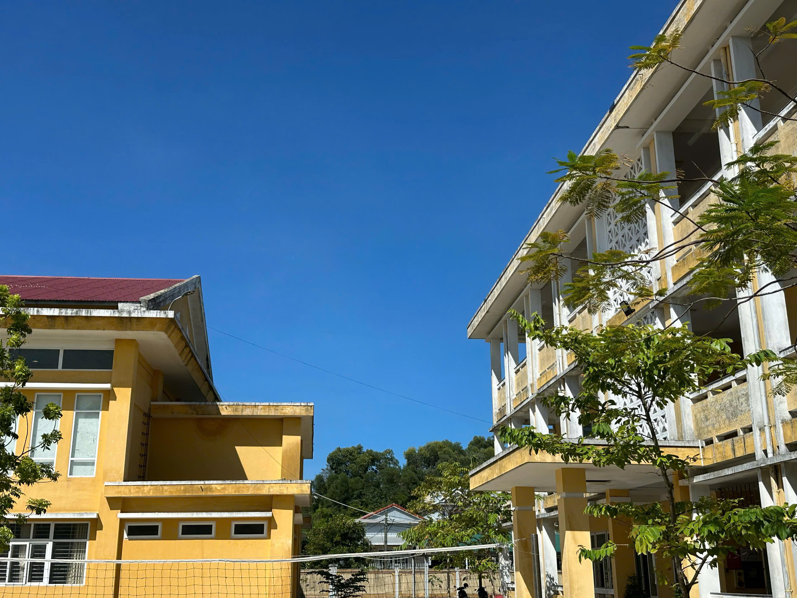
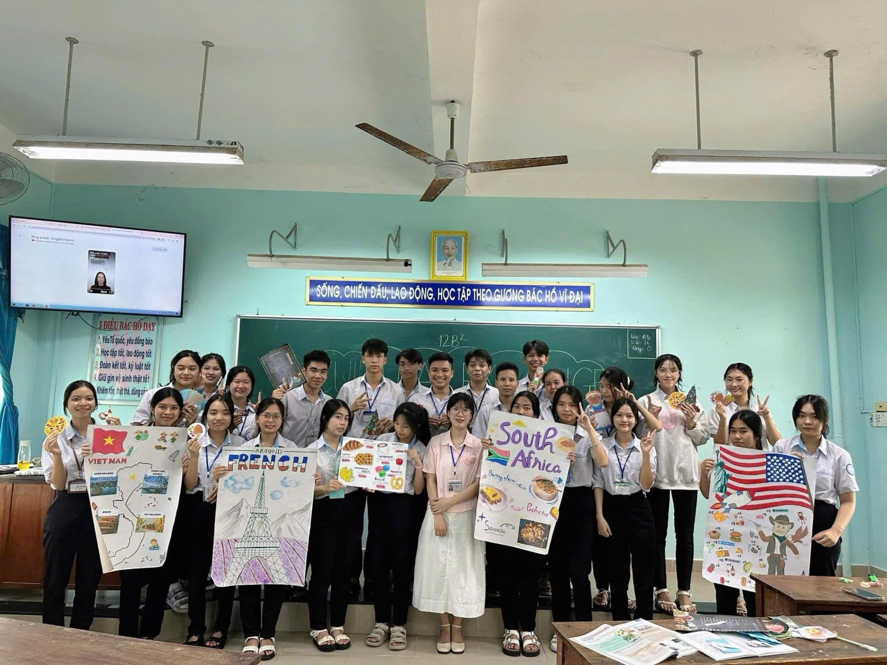
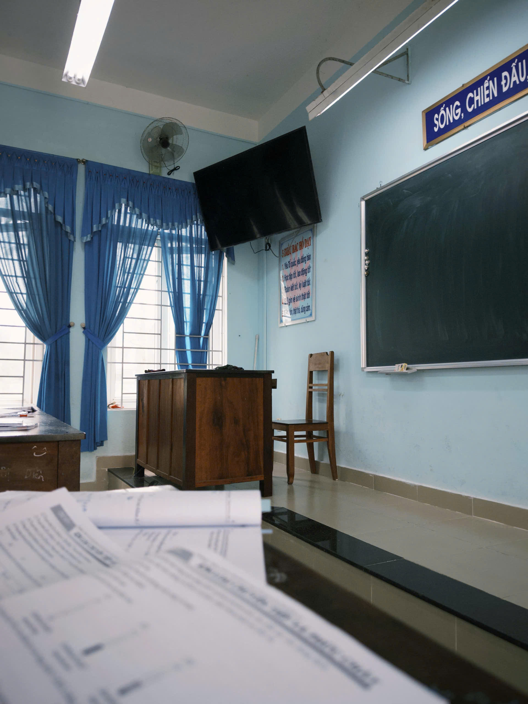

LỜI NGỎ - TRI ÂN 20/11
- Như những cánh buồm căng tràn gió biển, mang theo khát vọng vươn xa, tri thức chính là hành trang vững chắc giúp chúng em tiến bước trên hành trình tương lai. Và thầy cô – những người lái đò tận tụy, âm thầm đưa bao thế hệ học trò cập bến tri thức, chính là ngọn hải đăng soi sáng, dìu dắt chúng em vượt qua những khó khăn, thử thách để chạm đến ước mơ. Dưới mái trường thân yêu này, thầy cô không chỉ truyền dạy kiến thức, mà còn trao cho chúng em những bài học về cuộc sống, về tình yêu thương và nghị lực vươn lên. Mỗi lời dạy của thầy cô là ánh sáng dẫn đường, là ngọn gió nâng cánh buồm tri thức của chúng em tiến về phía trước. Có những lúc vấp ngã, nản lòng, nhưng chính sự động viên, chỉ bảo tận tâm của thầy cô đã tiếp thêm cho chúng em niềm tin và sức mạnh để tiếp tục hành trình. “Cánh buồm tri thức” – không chỉ là chủ đề của tờ báo tường, mà còn là biểu tượng thiêng liêng cho sự dắt dìu, nâng đỡ của thầy cô trong suốt những năm tháng học trò. Dẫu thời gian trôi qua, dù mai này có đi đến đâu, chúng em vẫn luôn khắc ghi công ơn ấy, vẫn luôn nhớ về những ngày tháng dưới mái trường, nơi thầy cô đã tận tụy gieo mầm tri thức và nâng đỡ chúng em bằng tất cả trái tim.
- Ngày Nhà giáo Việt Nam 20/11 không chỉ là dịp để tri ân, mà còn là khoảnh khắc để chúng em lắng lại, cảm nhận sâu sắc hơn công lao của những người thầy, người cô – những người đã tận tụy gieo mầm tri thức, chắp cánh cho bao ước mơ bay cao. Dưới mái trường này, thầy cô không chỉ dạy chúng em những con chữ, những công thức, mà còn trao cho chúng em những bài học về tình yêu thương, lòng nhân ái và ý chí vươn lên. Từng lời giảng của thầy cô không đơn thuần là kiến thức, mà còn là ánh sáng soi đường, là hành trang theo chúng em trên suốt chặng đường đời. Nhờ thầy cô, chúng em học được cách đối diện với thử thách, biết tin vào bản thân và mạnh mẽ theo đuổi ước mơ. Chúng em hiểu rằng, chẳng có món quà vật chất nào có thể đong đếm hết công lao trời biển ấy. Nhưng bằng tất cả tấm lòng, chúng em xin gửi đến thầy cô những lời tri ân chân thành nhất. Cảm ơn thầy cô đã luôn nhẫn nại, tận tâm, yêu thương và dạy dỗ chúng em bằng cả trái tim
Dẫu mai này, mỗi đứa học trò sẽ bay đến những chân trời riêng, nhưng những bài học, những kỷ niệm dưới mái trường này sẽ mãi là hành trang quý giá theo chúng em suốt cuộc đời. "Cánh buồm tri thức" sẽ mãi vươn ra biển lớn, mang theo bao hoài bão, ước mơ mà thầy cô đã chắp cánh cho chúng em!
